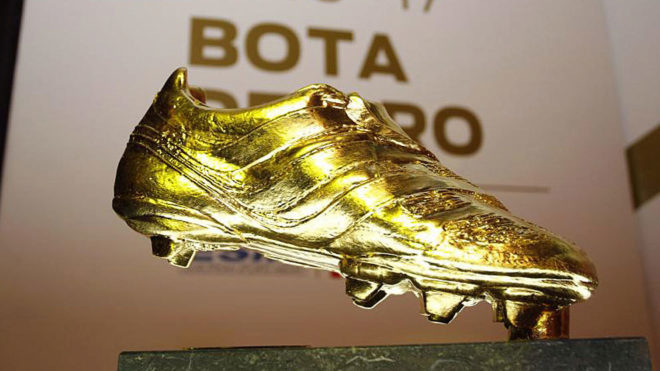
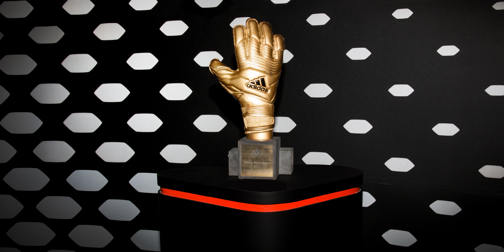

Balón de oro
El balón de oro es un premio que se le otorga al mejor jugador de la temporada anterior. En este título influyen los goles de la temporada anterior, las asistenicas de la temporada anterior, los títulos con tu selección en la temporada anterior, los títulos con tu equipo en la temporada anterior y tu rendimiento. El último balón de oro se lo llevó Robert Lewandowski, por la gran temporada que hizo con el Bayern de Münich, consiguiendo el triplete (liga, copa y champions) y siendo el máximo goleador de la Bundesliga.
Si hablamos del balón de oro tenemos que hablar de Cristiano Ronaldo y Leo Messi, que son los 2 futbolistas con más balones de oro en toda la historia (5 el portugués y 6 el argentino).
El primer balón de oro se lo llevó el inglés Stanley Matthews, puesto a que en ese momento solo podían conseguir un balón de oro los futbolistas con nacionalidad europea.
Bota de oro
El premio a la bota de oro se lo lleva el jugador que más goles ha conseguido meter en la campaña anterior. Como en todos los títulos, Cristiano Ronaldo y Messi son los jugadores con más botas de oro a lo largo de la historia (4 Cristiano y 6 Messi).
La última bota de oro también la consiguió Robert Lewandowski, con 41 goles. Messi quedó en 2º lugar con 30 goles y Cristiano Ronaldo quedó 3º con 29 goles.
Guante de oro
El guante de oro es al contrario que la bota, el premio por tener la mejor campaña bajo palos. El último guante de oro del mudnial fue para Courtuois, el cual desempeñó una gran tarea defendiendo la portería de los Belgas.